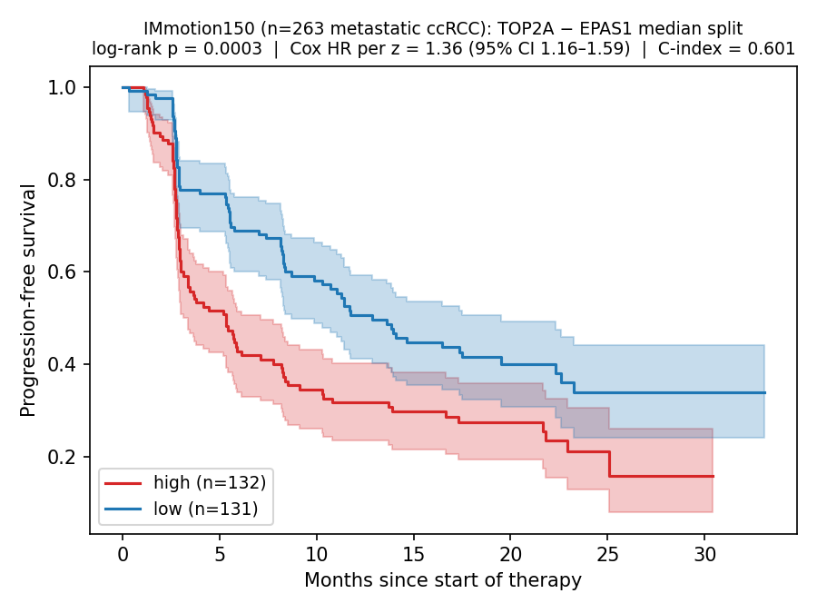

Lacuna
falsification-first biological law discovery
github.com/jang1563/lacuna-falsification
For every scientist whose null results pushed the field forward
but never made it into a paper.
falsification-first biological law discovery
github.com/jang1563/lacuna-falsification
For every scientist whose null results pushed the field forward
but never made it into a paper.
When biology becomes a search problem —
and AI is making it one —
the cost is paid in failed trials.
The map of where not to go
is the map worth building.
To trust that map: a gate that finds truth it was never told.
Rejection
The original TCGA-KIRC layer rejected 203 initial evaluations. After panel repair, 9 of 30 expanded-panel metastasis candidates passed. CA9 alone saturates tumor-normal AUROC at 0.965, so CA9-dominated compounds are refused.
Survivor
45-gene HIF / Warburg / proliferation panel. Same pre-registered thresholds. Nine laws pass on metastasis. The simplest is a law that was already published — in 2010:
A gate that recovers what was already published can be trusted for what has not been published yet.
Same 5-test gate · same BH-FDR · same Python code · four biologically distinct tasks.
External Replay
IMmotion150 — independent Phase-2 immunotherapy trial. n = 263 metastatic kidney cancer (ccRCC). Different cohort, different preprocessing, different endpoint (PFS — progression-free survival). Same two-gene score. Same direction.

Trajectory · DIPG active
H3 K27M diffuse midline glioma — a pediatric brainstem cancer. Universally fatal — until August 2025. The same failure-first architecture that rejected the initial kidney-cancer layer is now pointed at brainstem.
The published law is the tip.
The graveyard is the artifact.
Proven on known truth · trusted for unknown truth
For every scientist whose result said no.
github.com/jang1563/lacuna-falsification Explore the interactive story →IPF · Context Isolation
The Skeptic ran in a separate context window — it never received the Advocate's reasoning tokens. Context isolation as live audit layer.
Capability Overhang · E2 Ablation
180 API calls. Three models, same 6 candidates, same gate metrics,
same prompts/skeptic_review.md.
One stance collapses completely — with extended thinking.
Opus ran without extended thinking · wins anyway · calibration, not compute